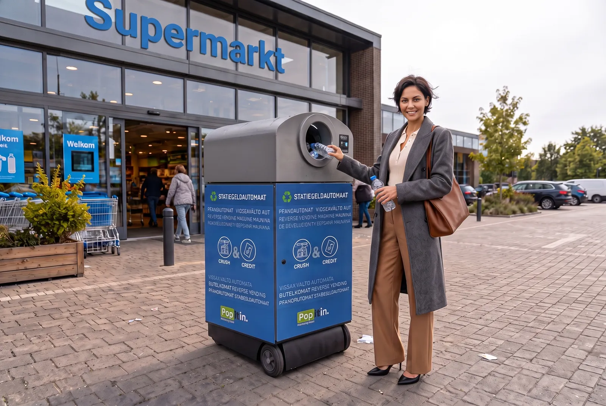
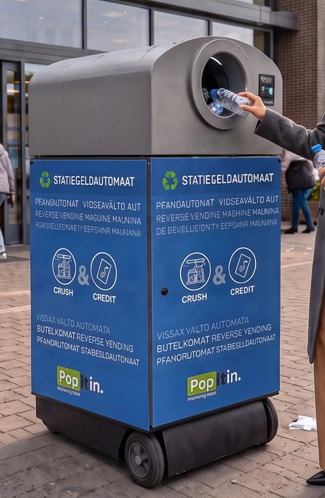

Flessen en blikjes erin, statiegeld eruit — op de plek waar mensen tóch al zijn. Zo makkelijk dat inleveren gewoon een gewoonte wordt.Bottles and cans in, deposits out — right where people already are. So easy that returning simply becomes a habit.


Pop it in herkent elke fles en elk blikje, perst het ter plekke compact en betaalt het statiegeld direct uit. Geen grote inbouwmachine, geen verbouwing — neerzetten en aanzetten.Pop it in recognises every bottle and can, compacts it on the spot and pays out the deposit instantly. No bulky built-in machine, no renovation — place it and switch it on.
"Ik gooi 'm erin op weg naar binnen. Tegen de tijd dat ik een karretje heb, staat het statiegeld al op m'n telefoon.""I pop it in on my way inside. By the time I've grabbed a cart, the deposit is already on my phone."
Statiegeld werkt alleen als inleveren makkelijk is. Door de machine naar de mensen te brengen komt meer PET en blik terug de keten in, schoon en gesorteerd, klaar voor hergebruik.Deposit return only works when returning is easy. Bringing the machine to the people returns more PET and cans to the loop, clean and sorted, ready for reuse.
Compact geperst, dus minder ritten om te legen.Compacted small, so fewer collection trips.
Optionele sortering levert schone monostromen op.Optional sorting delivers clean mono-streams.
Pop it in is gebouwd om met die golf mee te groeien.Pop it in is built to grow with that wave.
Klanten die bij jou hun statiegeld inleveren, kopen daar ook vaker iets.Customers who return their deposits at your store tend to shop there too.
Ontdek voor retailersExplore for retailersLive telemetrie, fraudecheck bij de inworp en afrekenklare data.Live telemetry, fraud checks at the point of return and settlement-ready data.
Ontdek voor DRS-operatorsExplore for DRS operatorsVertel ons over je locatie of markt — we nemen contact op met vervolgstappen.Tell us about your location or market — we'll get back with next steps.